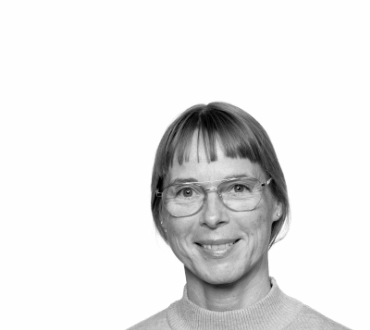
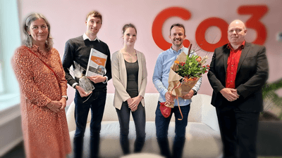

Studiestart
Varighed
Lokation
Økonomi
Multimediedesigner er en videregående uddannelse, der varer to år og består af fire semestre. Uddannelsen består af en fællesdel og en specialedel, hvor sidstnævnte primært ligger på 3. og 4. semester og byder på et specialiseringsforløb med valgfag, praktik og hovedopgave.
Klasseundervisning og projektarbejde
Et 12-ugers praktikophold
Et afsluttende eksamensprojekt
På 1. og 2. semester får du grundlæggende introduktion til de 5 fagområder.
Du skal indstille dig på lange arbejdsdage, engagerede undervisere, udfordrende gruppeprojekter, selvstudium foran computeren, hjælpsomme medstuderende og inspirerende forelæsninger.
På 3. og 4. semester specialiserer du dig. Der er specialiseringsforløb indenfor digital medieproduktion. Desuden er der 3 måneders praktik inden den afsluttende hovedopgave.
På uddannelsen til multimediedesigner har du en blanding af obligatoriske fag og specialiseringsfag. I de obligatoriske fag bliver du introduceret til de fem fagområder.
Læs mere herunder.
I specialiseringsfagene kan du præge din uddannelse i retningen af dit drømmejob.
Din hverdag vil veksle mellem undervisning, vejledning og projekter. På multimediedesigneruddannelsen taler vi ikke om lektier – du læser for din egen og din kommende arbejdsgivers skyld. Samtidig skal du indstille dig på, at der skal skrives en del rapporter, hvor du argumenterer for dine valg til løsning af givne problemstillinger.
Du vil løbende i din studietid på uddannelsen få brug for Adobe software til bl.a. redigering af billeder, video og lyd. Undervisningen tager udgangspunkt i de nyeste udgaver af programmerne, som du kan købe adgang til fra Adobes hjemmeside.
Uddannelsens fællesdel består af fem overordnede fagområder.
Faget handler om design og udvikling af digitale løsninger med særlig vægt på brugergrænseflader. Som multimediedesign studerende arbejder du med hele udviklingsprocessen, herunder planlægning, design og produktion.
Brugeroplevelser handler om udvikling af digitale brugeroplevelser. Med udgangspunkt i brugeren lærer du at arbejde med test og evalueringer.
Her lærer du om produktion af indhold til digitale medier. Du udvikler din forståelse af digitale medier og relevante typer af indhold samt lærer om formidling og anvendelse af data.
Teknologi handler om de teknologier, der indgår i digitale medieprodukter og produktion til digitale medier.
Under de valgfrie uddannelseselementer har du mulighed for at specialisere dig i et konkret emne inden for multimedieproduktion, fx UX - oplevelsesdesign eller frontend design og udvikling. Der bliver løbende udbudt forskellige valgfrie uddannelseselementer.
En vigtig del af din uddannelse som multimediedesigner er praktikperioden på 4. semester. Praktikperioden varer 12 uger. Her får du mulighed for at afprøve de ting, du har lært i løbet af de første 3 semestre. Samtidig stifter du bekendtskab med erhvervslivet og får indsigt i de krav og forventninger, virksomhederne har til multimediedesigneres viden og færdigheder.
Du er selv ansvarlig for at finde et praktiksted inden dit 4. semester. Dit valg af praktiksted skal selvfølgelig gerne afspejle dine fremtidsønsker. Underviserne på uddannelsen vil hjælpe dig med sparring og vejledning i processen med at vælge praktiksted og skrive ansøgninger.
Vores mål er at hjælpe dig med at finde et praktiksted med et behageligt miljø, hvor du får lov til at udføre nogle spændende arbejdsopgaver, der knytter sig til det felt, du ønsker at specialisere dig inden for.
Du kan komme i praktik i mange forskellige virksomheder. På kortet her kan du se, hvor i Danmark, der tidligere har været studerende i praktik.
Flere og flere af vores studerende søger mod udlandet i deres praktikperiode. Et praktikophold i udlandet er en investering i din fremtid. Du lærer om en fremmed kultur og får øvet dine sprogfærdigheder. For langt de fleste er et praktikophold i udlandet en oplevelse for livet, der styrker dem fagligt og personligt.
Hvis du ønsker at tage dit praktikophold i udlandet, er det en god idé at være tidligt ude med planlægningen. Da ansøgningstiden for legater og Erasmus kan være en langsommelig proces, anbefaler vi, at du allerede et halvt års tid før praktikperiodens start går i gang med at planlægge dit ophold.
Læs mere om praktik i udlandet
Der er 2 eksterne og 3 interne prøver på multimediedesigneruddannelsen. Ved de eksterne prøver vil der være censor til stede, der er udpeget af Undervisningsministeriet. Ved de interne prøver vil der være en censor til stede, der er udpeget af Erhvervsakademiet MidtVest.
Alle eksamener på Erhvervsakademi MidtVest foregår digitalt – både mundtlige og skriftlige. Derfor er det nødvendigt, at du som studerende har rådighed over en funktionsdygtig computer.
Før du går til eksamen, er det vigtigt, at du læser eksamensreglerne for din uddannelse.
Læs mere om digital eksamen og se eksamensreglementet her.
Du kan læse mere om bl.a. uddannelsens elementer, eksamener og internationalisering i uddannelsens studieordning.
Du finder studieordninger for din uddannelse her
Der er adgangsbegrænsning på uddannelsen til multimediedesigner.
OBS: Vær opmærksom på, at du også skal sende en motiveret ansøgning, hvis du ønsker at søge i kvote 2.
Ansøgningsfristen til kvote 2 er d. 15. marts kl. 12.00.
Læs mere om, hvordan du laver en motiveret ansøgning her.
Læs mere om kvote 1 og 2 under FAQ- ofte stillede spørgsmål herunder.
For at blive optaget på multimediedesigneruddannelsen skal du opfylde følgende krav:
Specifikke adgangskrav: Engelsk C og enten erhvervsøkonomi C eller matematik C eller virksomhedsøkonomi C.
Data- og kommunikationsuddannelsen (med specialer eller trin 2)
Digital media
Film- og tv-produktionsuddannelse (trin 2)
Fotograf
Grafisk tekniker
Mediegrafiker (trin2 hvis gl. ordning)
Skiltetekniker
Teknisk designer
Ingen specifikke adgangskrav
Fuldført erhvervsuddannelse med normeret varighed på 3 år eller mere, dog ikke relevante uddannelser nævnt ovenfor. Specifikke adgangskrav: Engelsk C og enten erhvervsøkonomi C eller matematik C eller virksomhedsøkonomi C
Adgangseksamen til ingeniøruddannelserne
Specifikke adgangskrav: Engelsk C
Du kan optages med en udenlandsk eksamen, hvis din uddannelse svarer til en dansk adgangsgivende eksamen. Vær opmærksom på, at dit udenlandske eksamensbevis skal oversættes til engelsk eller dansk og uploades sammen med en kopi af det originale eksamensbevis.
Vi anbefaler at du får din udenlandske uddannelse vurderet hos Uddannelses- og Forskningsministeriet. Læs mere på Uddannelses- og Forskningsministeriets hjemmeside.
Herefter kan vi – på basis af denne vurdering - tage stilling til, om du opfylder adgangskravene.
Uddannelsen har dansk som undervisningssprog, og du skal derfor have bestået Studieprøven, eller du skal kunne dokumentere tilstrækkelige danskkundskaber.
Du skal opfylde de specifikke adgangskrav, som er nævnt ovenfor. Det vil sige, at du skal have bestået engelsk C og enten erhvervsøkonomi C eller matematik C eller virksomhedsøkonomi C med en karakter, der er mindst 2,0. Hvis der indgår flere karakterer i faget/fagene, skal gennemsnittet være mindst 2,0. Kravet er ikke opfyldt ved oprunding.
Har du har læst faget/fagene på et højere niveau end det, der specifikt kræves, men ikke har bestået, skal du rette henvendelse til dit gymnasiale uddannelsessted for at få en såkaldt "rektorerklæring", hvoraf det fremgår, at du har opnået kompetencer, der svarer til det niveau, der kræves for at komme ind på uddannelsen.
Du kan søge om optagelse på baggrund af andre dokumenterede kvalifikationer end de fastsatte adgangskrav, hvis vi på baggrund af en individuel konkret vurdering har vurderet, at du har faglige kvalifikationer, der kan sidestilles med de fastsatte adgangskrav.
Behandlingstiden på en individuel kompetencevurdering kan være på op til fire uger.
Kontakt studievejledningen for vejledning om denne mulighed.
Du kan tage uddannelsen til multimediedesigner på EAMV's campus i Herning.
Læs mere om at være studerende på EAMV og i Herning herunder.
At være studerende på Erhvervsakademi MidtVest er både en faglig og social udviklingsproces, hvor du vokser både menneskeligt og fagligt. Det er i hvert fald vores mål. Vi er en mindre uddannelsesinstitution med blik for den enkelte studerende, så hos os skal du ikke være bange for at blive væk i mængden.
Vores uddannelser er projektorienterede, tæt på praksis og baseret på cases, individuelle opgaver og praktikophold. Det har vi valgt, da vi ønsker at forberede vores studerende så godt som muligt på hverdagen i en virksomhed. Som studerende på EAMV, får du afprøvet din viden i praksis.
Vores undervisere sætter en ære i at holde sig opdaterede på de nyeste tendenser inden for deres fagområde, så kvaliteten af undervisningen bliver så god som overhovedet muligt. EAMV lægger stor vægt på efteruddannelse og tæt kontakt med det private erhvervsliv og offentlige institutioner, så vi kan klæde dig bedst muligt på til at løse de opgaver, som erhvervslivet står overfor både i dag og i fremtiden.
Erhvervsakademi MidtVest byder på meget mere end fagligt indhold. Studiestarten indledes med introdage og en stor introfest. På den måde bliver du allerede fra begyndelsen introduceret til andre studerende på tværs af alle uddannelser. Derudover holder vi fredagsbar hver fredag.
DSR er din mulighed for at involvere dig og få indflydelse på, hvordan det er at være studerende på Erhvervsakademi Midtvest. DSR består af frivillige studerende og kæmper for de studerendes sag. Der er typisk to studerende fra hvert hold repræsenteret i DSR. Ved studiestart får du en introduktion til DSR og mulighed for at blive valgt ind.
Du kommer til at have din studietid i vores afdeling i Herning. Her vil du opleve at blive en del af en uddannelsesby i udvikling.
I Herning har du mulighed for at deltage i mange forskellige kulturoplevelser. Fra de store musikalske oplevelser på spillesteder som Fermaten og Jyske Bank Boxen til fordybelsen på biblioteket eller i Huset nr. 7.
Så uanset om du er til kunst, koncerter, stand-up eller en god bog, er der helt sikkert noget for dig.
Herning byder også på et væld af naturoplevelser. Tag badetøjet med til Fuglsang Sø eller oplev den spændende natur i Knudmosen. Der er også talrige gå-, løbe-, cykel- og mountainbike-ruter i parkerne og skovområderne i og omkring Herning
Da Herning er en mindre studieby giver det dig som studerende langt bedre mulighed for at mødes i fællesskaber med studerende fra andre uddannelser og uddannelsessteder.
Uddannelsesby Herning inviterer løbende alle studerende på tværs af byens forskellige uddannelsesinstitutioner til gratis arrangementer.
Pga. et godt samarbejde mellem Uddannelsesby Herning, FC Midtjylland, HC Midtjylland og Herning Blue Fox kan du desuden sikre dig billige studiebilletter til holdenes hjemmekampe.
I Herning er der mange måder at bo på. Her er ca. 1000 studieboliger og en masse private lejligheder til gode priser. Gennemsnitsprisen for en 1- eller 2-værelses studiebolig er ca. 3.500 kr. plus forbrug, men du kan også godt finde en fra 2.400 kr. Og så er de alle med eget køkken og bad. Du kan læse mere om livet som studerende i Herning og hvor du finder en bolig i Herning på Uddannelsesby Hernings hjemmeside.
En uddannelse til multimediedesigner giver mange forskellige muligheder for job.
Som multimediedesigner er du uddannet til at arbejde med digital kommunikation, grafisk design, programmering og projektstyring. En multimediedesigner kan kombinere tekst, lyd, billeder, animeret grafik og video, så budskabet formidles effektivt via digitale medier.
Du er kvalificeret til jobs, hvor arbejdsområderne er at planlægge, designe, styre og implementere forskellige typer af multimedieproduktioner. Multimediedesignere ansættes i mange forskellige virksomheder, som typisk er inden for brancher som reklame, marketing, medier, it og telesektor.
din fremtidige jobtitel kan - afhængigt af din profil - være:
Frontend designer
Frontend udvikler
UX designer
SoMe manager
Content creator
Udover at give adgang til en lang række jobmuligheder giver multimediedesigneruddannelsen dig desuden mulighed for at studere videre efter de to år.
Som uddannet multimediedesigner kan du bygge ovenpå din uddannelse med en 1,5-årig professionsbachelor (top-up) og målrette din uddannelse i retning af dit drømmejob.
På Erhvervsakademi Midtvest kan du vælge følgende professionsbacheloruddannelser:
Digital konceptudvikling
Innovation og entrepreneurship
International handel og markedsføring*
*Du kan søge om dispensation til denne uddannelse. Kontakt studievejlederen for at høre mere om dispensation.
På nogle uddannelser kan du få merit. Merit betyder, at du kan springe et eller flere fag på din nye uddannelse over, hvis du kommer med praktisk eller teoretisk erfaring fra din uddannelse som multimediedesigner, der vurderes at være dækkende for et fag på den nye uddannelse.
Theis brugte sin uddannelse til multimediedesigner som springbræt ud i jobbet som Web og SEO-konsulent. Hør hans historie i videoen.
|  |
Susanne Poulsen Kirk |
Studiesekretær |
Tlf.: 23 99 22 29 |
Mail: spk@eamv.dk |
Studievejledning
|
Jeg brænder for uddannelsen Digital Konceptudvikling fordi jeg får lov at arbejde med motiverede og engagerede studerende. Selv har jeg en baggrund fra reklamebranchen, hvor jeg primært arbejdede med udarbejdelse af analyser og digital marketing.
Kenneth Dahl, underviser på professionsbachelor i digital konceptudvikling
I min undervisning lægger jeg vægt på, at jeg er i dialog med de studerende.
At nysgerrigheden og motivationen er høj - at det teoretiske ikke kun kommer igennem bøgerne, men i lige så grad fra praksis.
Kasper Aaberg, underviser på multimediedesigneruddannelsen
|  |
Twoday Co3 gør stærkt comeback som praktikvirksomhed |
Læs mere |